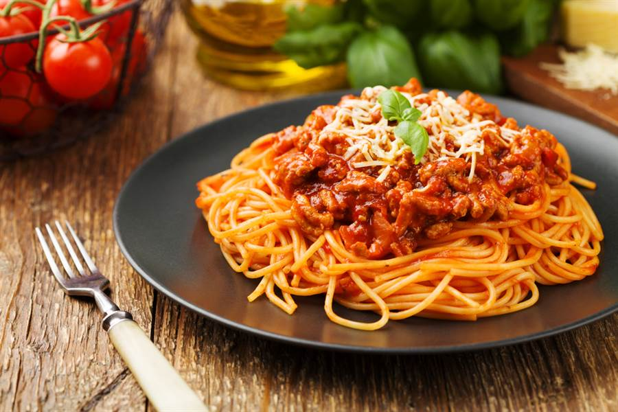

這名網友在PTT中發文，認為義大利麵的作法非常簡單，自己常常在家做，
吃起來的口感也和外面賣150到200元的義大利麵差不多，實在是不太能理解為何餐廳都會開出這麼高的價錢；
反之，日式拉麵既是外來飲食，而且也很少有人可以在家煮出拉麵，所以價格高一點滿合理的；
而牛肉麵更是高成本，且一般人根本沒辦法熬煮出湯頭，但因為是在地美食所以價位較低；
這樣綜觀下來，讓PO主更沒辦法理解，究竟成本低又好做的義大利麵，到底憑什麼賣那麼貴呢？
文章發布後有許多網友紛紛前來解答，指出義大利麵昂貴的原因，
「重點是醬，麵都差不多」、「橄欖油、起司、杜蘭麥麵條成本本來就比較高」、
「食材成本真的不高，外國主廚加持才貴」；不過也有人提出反對意見，「外面吃到的九成是台式義大利麵騙盤子」、
「牛肉麵一碗200嫌貴，義大利麵一盤350還好而已？ 日式拉麵200以上也算正常，這就是台灣人的價值觀」。

咖哩中的印度維他命
吸麵大聲好失禮?
提拉米蘇由來
心得報告